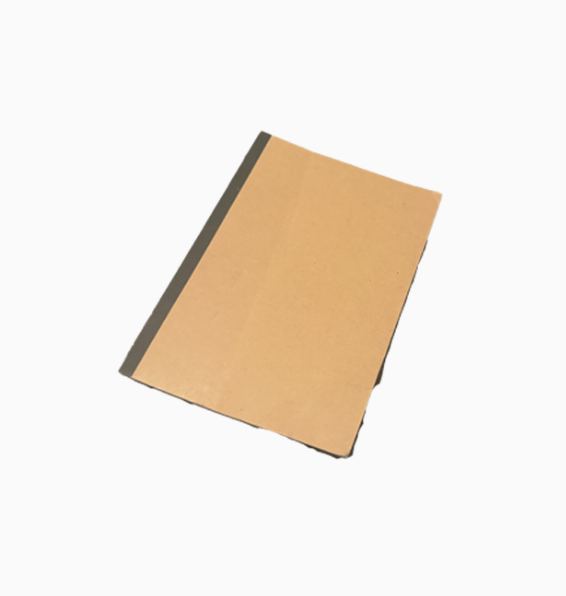

Notebook

Muji Paper Lined Notebook B5
Size
9.9*7 inches
Timeline
Owned more than a year
Released during 1980s
Description
A slim notebook for taking notes and sketching ideas. Mostly execution is not done here, the drafts are what pretty much get done.
Memories
Purchased as a set of four or five last year, but as time passes, the usage has decreased. Defnitely had to use a lot more in the first year, but now I barely use it for school work. I currently notetake or memo with a laptop.
Dreams
I might be using one of these again in the near future since I am involved with a major project ahead.
Wonders
I wonder if I will be incorporating illustrations in my work, and if so I would be using notebooks more often.